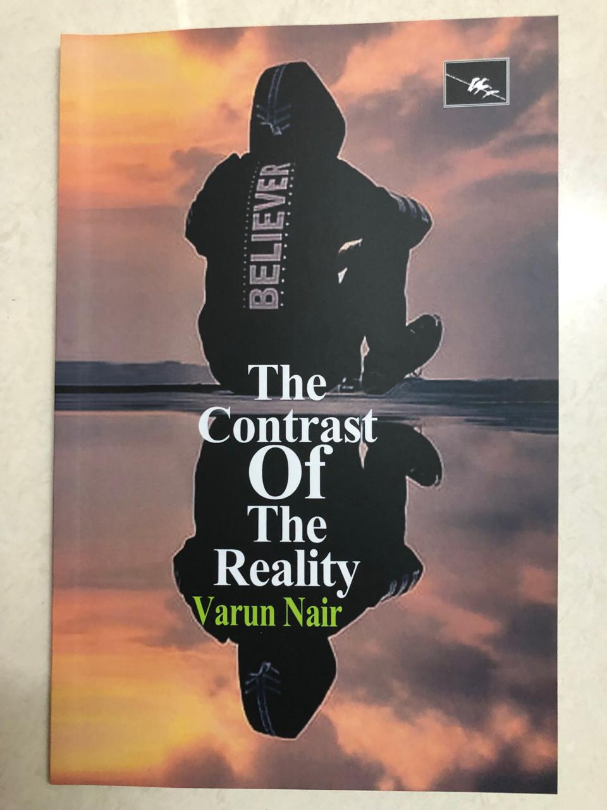
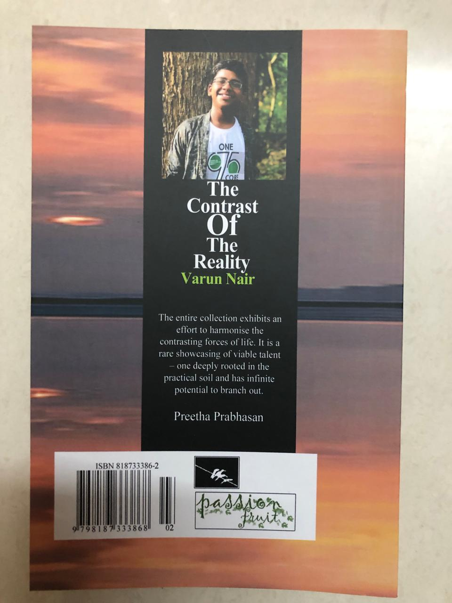

This is my first book, behind which , I see many smiles that have acted as a fuel and helped me to move forward.
This book consists of poems that are completely based on my imagination and as well as poems that are partially true and the rest is imagined. There is no single theme for all the poems.
Through this book, I have dived into a plethora of topics. Some are funny, some are related to nature and some
are based on incidents that take place in our surroundings.
"The entire collection exhibits an effort to harmonise the contrasting forces of life. It is a rare
showcasing of viable talent- one deeply rooted in the practical soil and has infinite potential to branch out."
Preetha Prabhasan (Asst. Professor, Department of English).
